Error-Correcting Codes
(A) Error-correcting schemes for wireless communication systems
In the next-generation mobile communications and Internet of Things, high error-correction capability, low computational complexity, and efficient memory management are required, and various error-correcting schemes have been studied to satisfy these requirements such as low density parity check (LDPC) codes, spatially coupled LDPC (SC-LDPC) codes, Bose-Chaudhuri-Hocquenghem (BCH codes), and polar codes.
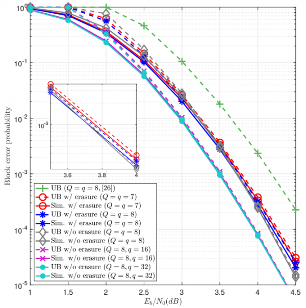
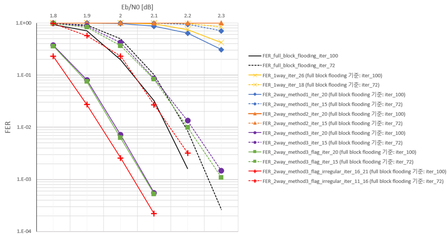
(B) Error-correcting schemes for memories such as NAND flash memory and DRAM
In memory systems (e.g., NAND flash memory and DRAM) to which an ultra-fine process of 10 nm or less is applied, problems that degrade data reliability are caused due to many errors that occur due to rapid deterioration of channels. To solve this problem, it is necessary to research the application of error correction techniques to efficiently control errors in memory systems. In this study, we research various error correction techniques with low complexity and high reliability for the next-generation memory systems.
- Channel modeling and analysis for various errors
NAND flash chip contains several planes and each plane consists of a set of blocks. A block has many pages and each page consists of many memory cells. Therefore, cell is a basic storage unit of NAND flash memory. The threshold voltage of a cell is quantized into multiple discrete levels to represent data. For MLC NAND flash memory, the left bit and the right bit of two bits are called as the most significant bit and the least significant bit, respectively.
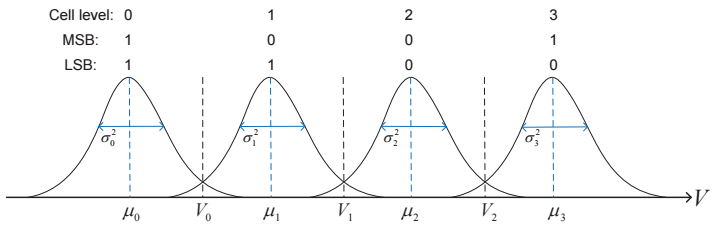
F. Sun, K. Rose, and T. Zhang, "On the use of strong BCH codes for improving multilevel NAND flash memory storage capacity,'' 2006 IEEE Workshop on Signal Processing Systems (SiPS): Design and Implementation, vol. 15, no. 8, pp. 860-862, Aug. 2011.
To represent the possible fault modes that may occur in current/future DRAM systems, error model is first described. This model covers various type of faults that arise in DRAM devices, data-bus and address-bus. Faults in DRAM subsystems are caused due to a variety of sources such as cosmic rays, circuit failure, and signal integrity.
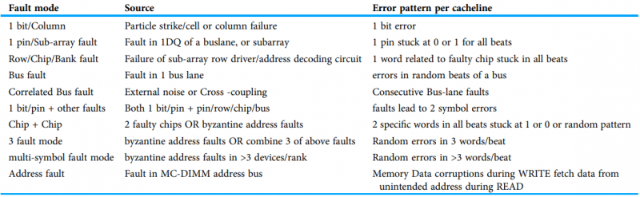
Yeleswarapu R, Somani AK. 2021. Addressing multiple bit/symbol errors in DRAM subsystem. PeerJ Computer Science 7: e359 https://doi.org/10.7717/peerj-cs.359
- Error-correcting schemes for memory systems
In memory systems, various error-correcting codes are applied such as BCH codes, LDPC codes, polar codes, chipkill, single device data correction (SDDC), and single-bit error correction and double-bit error detection (SECDED) code according to the requirements for code design.
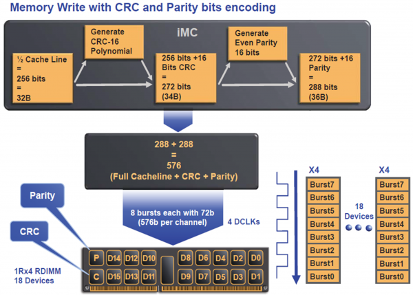
(C) Blind detection/identification of error-correcting codes in a non-cooperative context
Error-correcting codes (ECCs) are essential to improve the reliability of digital communication systems. ECCs can detect or correct the errors by introducing and utilizing the systematic parity check bits. However, ECCs deteriorate the spectral efficiency of digital communication systems and hence it is always preferable to enhance the spectral efficiency by any means. In order to enhance the spectral efficiency, the blind detection/identification schemes of ECCs have been actively studied.
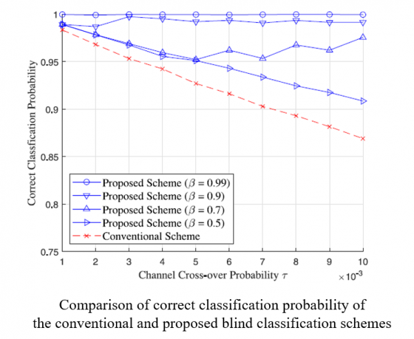
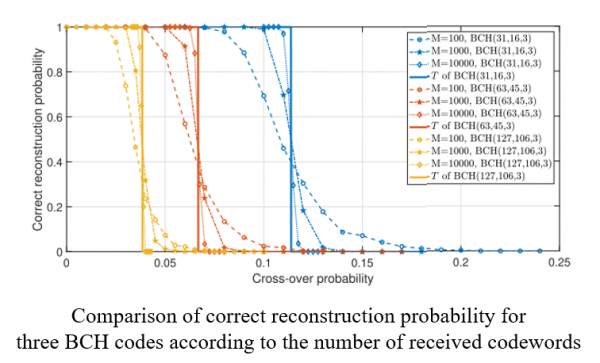
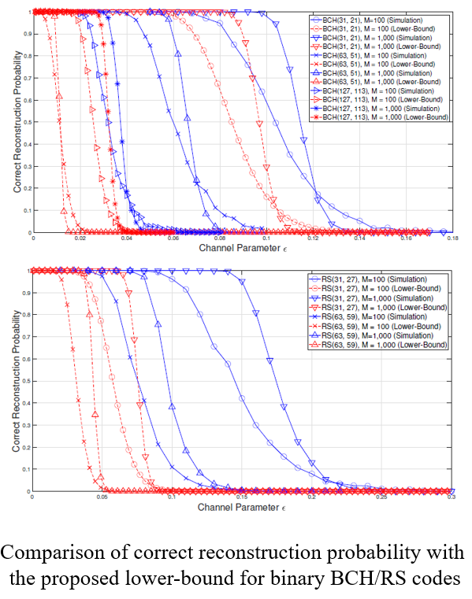
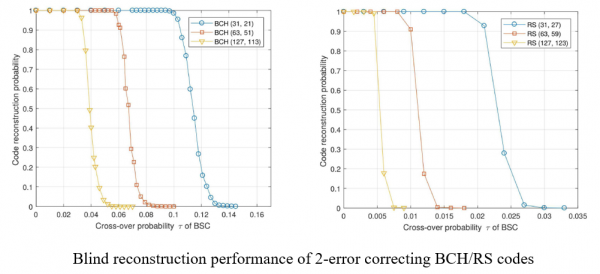
Post-Quantum Cryptography
(A) Lattice-based post-quantum cryptography
After Google achieved quantum supremacy, various quantum algorithms such as Shor’s algorithm and Grover’s search algorithm are suggested to break cryptosystems down. However, lattice-based cryptography has resistance of quantum algorithm because it is designed from the NP lattice problem such as shortest vector problem (SVP), closest vector problem (CVP), and their approximated problems. But the dimension of lattice decides a hardness of problem, ciphertext size or key size of lattice-based cryptography is much heavy than other classical cryptography such as discrete logarithm or elliptic curve-based cryptography. Our goal is to design a more practical lattice-based cryptography.
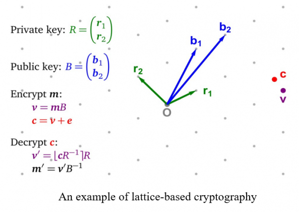
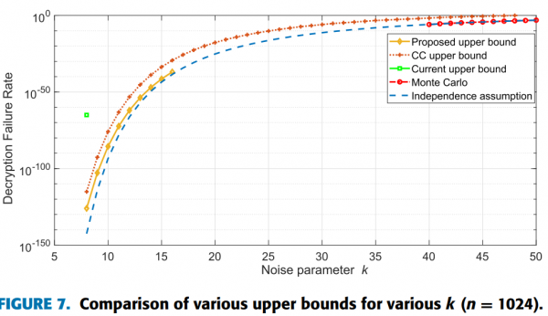
(B) Code-based post-quantum cryptography
(C) Fully homomorphic encryption for deep learning
Fully homomorphic encryption (FHE) is newest research field. The FHE can calculate on ciphertext and other cryptosystems cannot. However, after operating on a FHE ciphertext, magnitude of noise grows. To handle a noise in ciphertext, a bootstrapping algorithm can reduce a noise so that it can calculate polynomial times. The first of our research is enhancing a bootstrapping algorithm and design a efficient FHE. A second of our research is applying a FHE to a deep neural network.
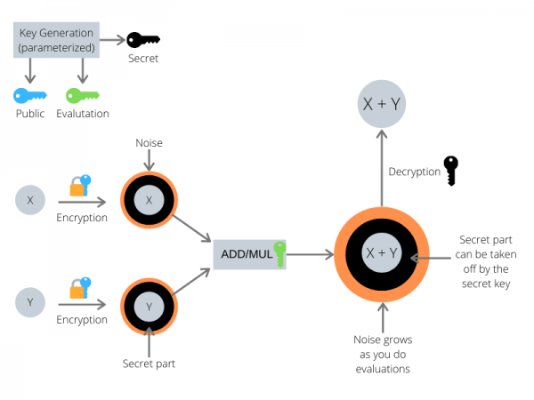
Machine Learning/Deep Learning
(A) Machine learning/Deep learning schemes for communication systems and autonomous vehicles
(B) Improving the robustness of deep neural networks through feature disentanglement and error-correcting output codes
- Feature Entanglement
Variational Auto Encoder (VAE) is the generative model of Deep neural network (DNN). Recently, The VAE field is interested in entanglement in feature space. Our research leverage feature entanglement to improve the performance of DNN and their robustness. Specifically, feature entanglement denotes capacity of separation between each feature. By improving feature entanglement, the DNN has a strong decision boundary for noise data. The feature entanglement is analyzed in statistics and manifold learning in our research. By improving robustness, we achieve the robust DNN that can well predict noise data such as additive noise, crops, rotation, various transform, and adversarial attack. Also, the robust DNN guarantee strong performance even in practical environments.
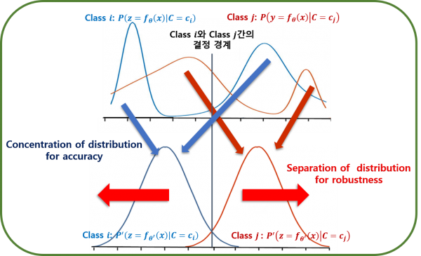
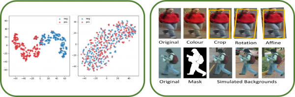
- Error-Correcting Output Codes
Conventional one-hot encoding is an effective technique to boost performance of classical and deep neural networks based classification models. However, the existing target encoding (One-hot encoding) approaches against noisy data and adversarial attacks require significant increase in the learning capacity, thus demand higher computation power and more training data. These methosd have been shown to learn dataset bias, and failed to deliver sufficient generalization capability. So, Our goal is to design class dependent Error Correcting Output Codes (ECOC) that makes the Hamming distace between lables larger. With one-hot encoding, a larger error in single logit could alter the classification result. Whereas in our Error Correcting Output Codes a large error in a single logit alone would not alter the result, since there are still k − 1 more logits that has to agree on the decision (like error correcting codes). And we are conducting research strategically extracts the similarity between pairs of classes in a dataset and leverages on that information to obtain a error correcting output encoding such that semantically closer classes are forced to be further apart in the label space in terms of the Hamming distance. Furthermore we will do comprehensive study on the effects of our target encoding scheme on both noisy label, noisy/adversarial data.
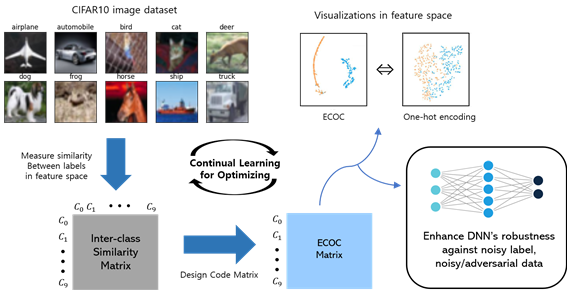
Radar Signal Processing
(A) Analysis of various CFAR algorithms and derivations of optimal parameters
The constant false alarm rate (CFAR) is a detection algorithm in radar system. When an autonomous driving vehicle moves on the road, detecting neighbor cars and estimating their locations and velocity are the most important technology. The CFAR provides vehicle having false detecting probability consistently. Our goal is to design a CFAR maximizing the detection probability given sensor data.
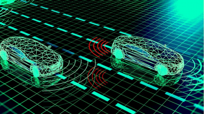
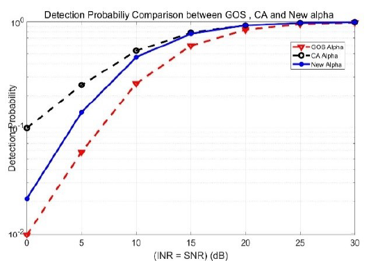
(B) Deep learning-based CFAR algorithms for military and commercial radar systems
Deep learning-based CFAR algorithm is a study to detect objects through radar signals using CNN and RNN layers. We conduct research to improve performance by using less data than existing techniques and easily control false alarm probability.
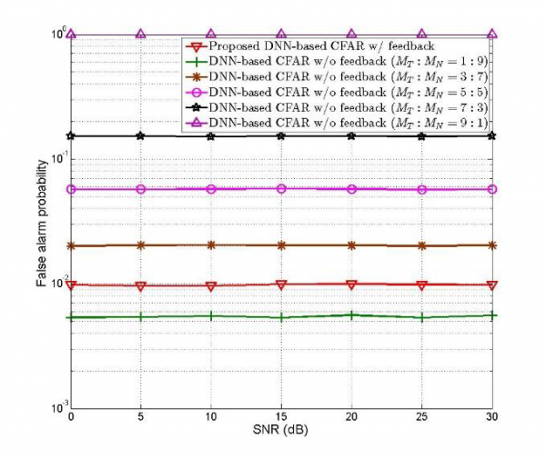
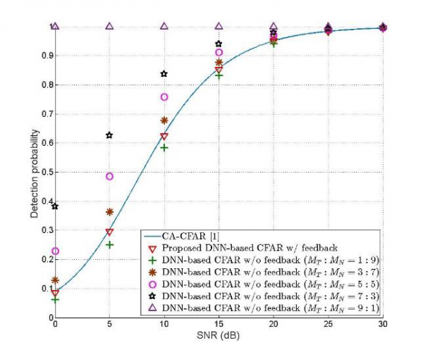